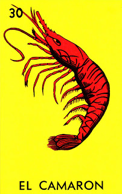

"En las aguas saladas, el camarón nada con agilidad."

"The Camarón card in Lotería represents agility, the sea, and the bounty of nature. Depicted as a shrimp, it symbolizes the richness of marine life and the delicacies that come from the ocean. In Mexican culture, camarón is a popular ingredient in many coastal dishes, and this card reflects the connection between nature's resources and the joy they bring to the table."
Regresar